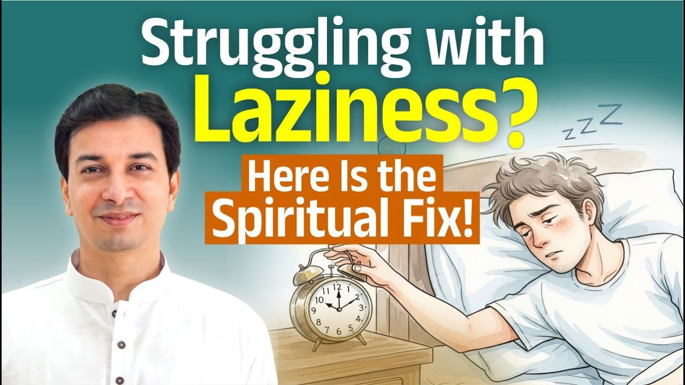

जब आलस्य हटता ही नहीं
एक साधक ने पूछा, "हमारा आलस्य कम नहीं हो रहा है, तो क्या करें?"
उत्तर सीधा है: यदि आलस्य कम नहीं होता, तो कर्तव्य-बोध (sense of duty) बढ़ाना होगा।
आलस्य तमोगुण (जड़ता और अज्ञान का गुण) का प्रमाण है। और तमोगुण से सीधी छलांग नहीं लगती। उससे निकलने के लिए पहले रजोगुण (कर्म और गति का गुण) में आना ही पड़ता है।
सीधी छलांग कब संभव है?
सीधी छलांग के लिए गुरु चाहिए। ऐसा गुरु जो प्रत्यक्ष आपके सामने हो और आपके जीवन में हस्तक्षेप करे।
ऐसा गुरु नारद मुनि की तरह वाल्या को वाल्मीकि बना सकता है।
इसीलिए आचार्य जी कहते हैं, गुरुकुल में आ जाओ। वहां सुबह से शाम तक ऐसे काम में लगाया जाएगा कि आलस्य को जगह ही नहीं मिलेगी। पीछे कोड़ा होगा, और देखने के लिए दो निगरानी करने वाले भी। तब तमस अपने आप चला जाता है।
यह बाहर से आया अनुशासन है। और जब यही अनुशासन भीतर की प्रेरणा से आता है, तब भी आलस्य चला जाता है।
हम नियम क्यों मानते हैं?
ज़रा सोचिए, हम ठीक से व्यवहार क्यों करते हैं? क्योंकि बाहर शास्त्र है, राजा है, कड़े नियम हैं।
बिजली का बिल समय पर न भरो तो बिजली कट जाएगी। यह दंड है। इसलिए आलस्य कितना भी हो, बिल भरने जाना ही पड़ता है।
नोटबंदी के समय किसी ने आलस्य किया क्या? नहीं। सबको बोध था कि पैसा रद्दी हो जाएगा, तो सब चुपचाप पंक्ति में लग गए।
आचार्य जी बताते हैं कि आत्म-बोध तो बहुत दूर की बात है; जब कर्तव्य का बोध हो जाता है, तो तमस चला जाता है और हम रजस में आ जाते हैं।
आपके जीवन में कौन सा काम आप केवल दंड के डर से समय पर करते हैं, और कौन सा कर्तव्य समझकर?
प्रेय या श्रेय: क्या चुनें?
रजस में भी डर से काम करना अंतिम लक्ष्य नहीं है। अगला चरण सत्त्वगुण (शुद्धता और विवेक का गुण) है।
यहां चुनाव बदलता है। प्रेय का अर्थ है जो अच्छा लगता है। श्रेय का अर्थ है जो कल्याणकारी है।
गुरुकुल में शिष्य कहता है, "मुझे जो अच्छा लगेगा, वही करूंगा।" गुरु कहते हैं, "नहीं, वह कर जो तेरे लिए श्रेष्ठ है, और फिर उस श्रेष्ठ को ही अपना प्रिय बना।"
जो करते हो उसे पसंद करो, या जो पसंद है वही करो? यदि केवल पसंद का ही करें, तो किसी को शराब अच्छी लगती है, किसी को आलस्य।
आचार्य जी कहते हैं कि श्रेष्ठ कर्म हमारा प्रिय होना चाहिए; हमारा श्रेष्ठ कर्म ही प्रिय कर्म होना चाहिए।
क्या आपका सबसे प्रिय काम आपके लिए श्रेष्ठ भी है?
सत्त्व के भी पार: गुणातीत
सत्त्वगुण के बाद गुणातीत (तीनों गुणों से परे) अवस्था आती है।
तब तीनों गुण आपके अधीन होते हैं। आराम करना हो तो आराम, कार्य करना हो तो कार्य।
भावना ऐसी होती है मानो आप सेवानिवृत्त हो गए हों, फिर भी पूरी तरह सक्रिय हैं।
तमस से निकलने के दो ही रास्ते
यदि आलस्य, प्रमाद या कोई भी तमोगुण नहीं जाता, तो पहले रजोगुण में लाना पड़ता है: कोई बाध्यता, कोई नियम, कोई जबरदस्ती। कोई तो बोध कराए कि यह समय और धन की बर्बादी है।
तमस में अहंकार भी है। उसे तोड़ने के लिए कोई सामने बैठा होना चाहिए।
शराब का अड्डा तभी बंद होता है जब कोई मंत्री, गुरु या आंदोलन करने वाला उसे बंद कराए, या फिर पीने वाले को स्वयं बोध हो। दो में से एक।
सिग्नल पर भी हम तभी रुकते हैं जब नियम हो और सिपाही खड़ा हो। नहीं तो तमोगुण में मनुष्य अज्ञानवश कैसे भी चलाता है।
गुरु संस्कार बदलते हैं
आलस्य और प्रमाद तमोगुण के अंतर्गत आते हैं। उपाय है कर्तव्य-बोध, यह भाव कि "मुझे यह करना ही है।"
और गुरु संस्कार (मन की गहरी छापें) बदल देते हैं। संस्कार बदलते ही कर्म करने की इच्छा अपने आप जागती है। या कर्म जल्दी पूरा करके विश्राम की इच्छा होती है, या फिर सब त्याग कर व्यक्ति शांत होकर बैठ जाता है।
मुख्य बातें
- आलस्य तमोगुण का लक्षण है; उससे निकलने के लिए पहले रजोगुण में आना पड़ता है।
- प्रत्यक्ष गुरु का हस्तक्षेप सीधी छलांग करा सकता है, जैसे नारद ने वाल्या को वाल्मीकि बनाया।
- बाहरी नियम और दंड (बिजली का बिल, नोटबंदी, सिग्नल) दिखाते हैं कि बोध होते ही आलस्य टिकता नहीं।
- कर्तव्य-बोध तमस से रजस में लाता है; श्रेष्ठ को प्रिय बनाना रजस से सत्त्व में।
- सत्त्व के बाद गुणातीत अवस्था है, जहां विश्राम और कर्म दोनों आपके वश में हैं।
- गुरु संस्कार बदलते हैं, और तब कर्म की इच्छा स्वयं जागती है।
